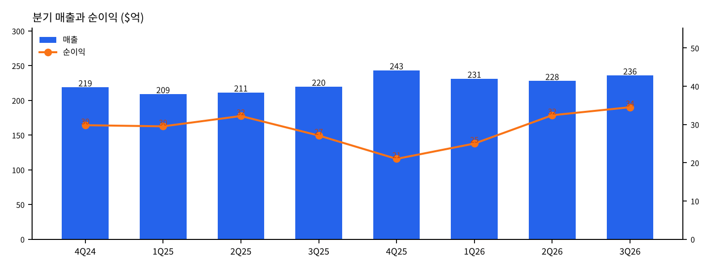
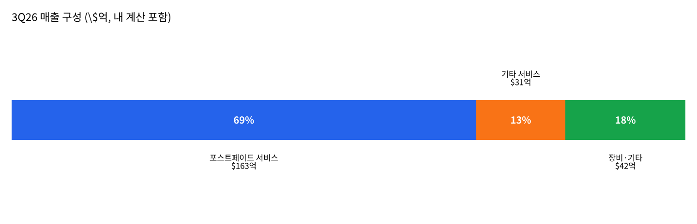
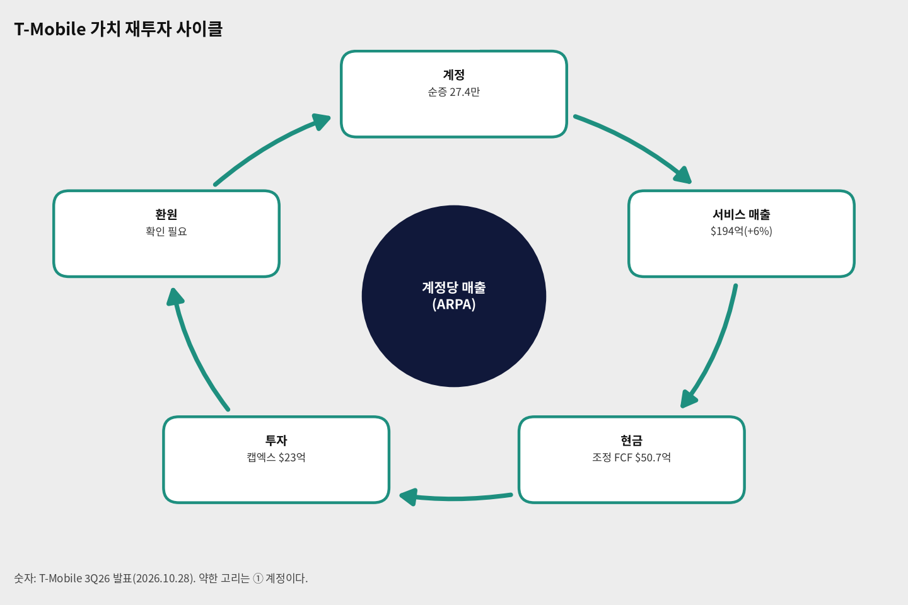

T-Mobile은 5G 무선과 가정용 인터넷(5G 고정무선·광)을 묶어 파는 통신사다. 계정 단위 지표로 전환해 고객당 매출(ARPA)을 강조한다.
| 항목 | 내용 |
|---|---|
| 종목 | T-Mobile US (TMUS) · NASDAQ · 커뮤니케이션(통신) · 워싱턴 벨뷰 |
| 멀티플 | PER·P/S는 08·09 항목 표 참조 |
| 최근 분기(3Q26) | 매출 $236억, 순이익 $34.5억, EPS $3.22 |
| 가이던스(FY26) | 핵심 조정 EBITDA $373.5~374.5억, 조정 FCF $187~188억 |
| 직원 수 | 약 75,000명(트레이딩뷰) |
| 직책 | 인물 | 역할·특징 |
|---|---|---|
| CEO | 스리니 고팔란(Srini Gopalan) | 포스트페이드 계정과 5G 광대역 순증에서 업계 1위라고 설명 |
| CFO | 피터 오스발디크(Peter Osvaldik) | FY26 가이던스 상향을 설명 |
경영 스타일: '계정 기반 성장 + 현금 환원'. 가입자 수보다 계정당 매출·현금흐름을 앞세운다.
무선과 가정용 인터넷을 한 계정으로 묶어 이탈을 줄인다.
미국에서 6G를 가장 먼저 내놓겠다고 밝혔다.
다음 실적발표는 세 가지 질문에 답하는 자리다.
1. 계정 순증이 가이던스(약 100만)에 닿나?
2. ARPA 성장이 유지되나?
3. 지배구조 이슈가 영향을 주나?
한 줄 판정 규칙: 첫 질문(계정 순증)과 둘째 질문(ARPA)이 유지되면 약한 고리(순증 둔화)가 풀린다.
일정: 4Q26 실적 발표는 트레이딩뷰 기준 2027.02.03(확인 필요).
| 분기 | 매출 | 순이익 | EPS | 조정 EPS | 특이 사항 |
|---|---|---|---|---|---|
| 4Q24 | $218.7억 | $29.8억 | 2.57 | 2.57 | |
| 1Q25 | $208.9억 | $29.5억 | 2.58 | 2.58 | |
| 2Q25 | $211.3억 | $32.2억 | 2.84 | 2.84 | |
| 3Q25 | $219.6억 | $27.1억 | 2.41 | 2.41 | |
| 4Q25 | $243.3억 | $21.0억 | 1.88 | 1.88 | |
| 1Q26 | $231.1억 | $25.0억 | 2.27 | 2.27 | |
| 2Q26 | $227.9억 | $32.4억 | 2.99 | 2.99 | |
| 3Q26 | $235.8억 | $34.5억 | 3.22 | 3.22 |
3Q26 매출 $236억(+7%), 순이익 $34.5억(+27%), EPS $3.22(+34%)(회사 발표 2026.10.28). 조정 EPS를 따로 발표하지 않아 GAAP와 같다(트레이딩뷰 Reported 미수집). 매출·순이익·EPS(GAAP 희석)는 트레이딩뷰 스캐너, 조정 EPS는 트레이딩뷰 실적 페이지의 Reported 값이다. 분기 정렬은 오래된 분기→최신이다.

흐름 요약: 최근 분기 매출은 $235.8억로 전년 동기 $219.6억 대비 +7.4%, 순이익은 $34.5억(전년 $27.1억)다. 최근 4분기 GAAP EPS는 $10.36, 조정 EPS는 $10.36다.
| 항목 | 내용 | 3Q26 금액 | 비고 |
|---|---|---|---|
| 포스트페이드 서비스 매출 | 월정액 고객 | $162.7억 | +9% |
| 기타 서비스(내 계산) | 서비스 합계 − 포스트페이드 | $31.3억 | 서비스 합계 $194억 |
| 장비·기타(내 계산) | 총매출 − 서비스 | $42억 | 총 $236억 |

포스트페이드 서비스 매출이 서비스 매출의 약 84%(내 계산)다.
T-Mobile은 '고객에게 가장 좋은 연결 경험을 제공하는 업계 선도 통신사'가 되는 것을 목표로 한다.
| 축 | 내용 |
|---|---|
| 계정 | 순증 계정 약 100만(FY26) |
| 현금 | 조정 FCF $187~188억 |
| 기술 | 6G 선점 |

| 이동평균 | 값 | 종가 대비 | 위치 |
|---|---|---|---|
| 5일선 | $168.58 | -2.7% | 종가 아래 |
| 20일선 | $160.00 | +2.5% | 종가 위 |
| 50일선 | $162.82 | +0.7% | 종가 위 |
| 100일선 | $172.14 | -4.7% | 종가 아래 |
| 200일선 | $185.44 | -11.6% | 종가 아래 |
52주 고가 $224.75(2026-02-24)·저가 $143.75(2026-10-28) 범위에서 종가 $164.02는 20일선, 50일선을 웃돌고 5일선, 100일선, 200일선은 밑돈다.
| 규칙 | 기준 | 현재 값 | 신호 |
|---|---|---|---|
| 장기 추세 필터 | 종가 vs 200일선 | $164.02 < $185.44 | 매도 |
| 중장기 교차 | 50일선 vs 200일선 | $162.82 < $185.44 | 매도 |
| 단기 교차 | 20일선 vs 50일선 | $160.00 < $162.82 | 매도 |
| 돈키언 채널 | 55일 고가 $189.87 / 저가 $143.75 | 중간값 $166.81 아래 | 매도 |
| 1개월 모멘텀 | 21거래일 수익률 | +4.0% (기준 $157.75) | 매수 |
| 3개월 모멘텀 | 63거래일 수익률 | -9.5% (기준 $181.22) | 매도 |
| 6개월 모멘텀 | 126거래일 수익률 | -13.7% (기준 $190.16) | 매도 |
| 12개월 모멘텀 | 252거래일 수익률 | -24.0% (기준 $215.84) | 매도 |
| 종합 (8개 평균) | -0.75 | 강한 매도 |
해석: 매수 신호 1개(1개월 모멘텀), 매도 신호 7개(장기 추세 필터, 중장기 교차, 단기 교차, 돈키언 채널, 3개월 모멘텀, 6개월 모멘텀, 12개월 모멘텀). CTA 점수 -0.75(강한 매도). 14일 ATR $6.10 (3.7%), 52주 고가 $224.75 · 저가 $143.75.
| 가격 | 기준 | 무엇이 바뀌나 |
|---|---|---|
| $215.84 | 12개월 모멘텀 기준가 | 종가가 이 가격 위면 12개월 신호 매수 |
| $190.16 | 6개월 모멘텀 기준가 | 종가가 이 가격 위면 6개월 신호 매수 |
| $189.87 | 55일 고가 | 돌파 시 채널 상단 갱신 |
| $185.44 | 200일선 | 종가가 이 선 위/아래인지로 장기 추세 신호가 바뀜 |
| $181.22 | 3개월 모멘텀 기준가 | 종가가 이 가격 위면 3개월 신호 매수 |
| $166.81 | 돈키언 중간값 | 55일 채널 중간값 위/아래로 신호가 바뀜 |
| $157.75 | 1개월 모멘텀 기준가 | 종가가 이 가격 위면 1개월 신호 매수 |
| $143.75 | 55일 저가 | 이탈 시 채널 하단 갱신 |
가격 수준은 신호가 바뀌는 기준선일 뿐 진입·청산 가격 제안이 아니다. 20일/50일 교차는 이동평균 자체가 움직여 단일 가격으로 표시하지 않았다. 일봉·주봉은 종가 기준 직접 계산(고저 데이터 미사용)이다.
| 악재 요인 | 내용 | 강도 |
|---|---|---|
| 순증 둔화 | 순증 계정 전년 대비 -31% | 중간 |
| 경쟁 심화 | 프로모션 경쟁 | 중간 |
| 지배구조 | 전 CEO 사임·합병 제안 보도 | 중간 |
| 부채 | 부채 $1,180억 | 중간 |
| 티커 | 회사 | PER(TTM) | PEG | P/S | EPS 성장(YoY) |
|---|---|---|---|---|---|
| TMUS | T-Mobile US | 15.8배 | – | 1.85배 | -0% |
| VZ | Verizon | 11.8배 | – | 1.37배 | -16% |
| T | AT&T | 11.8배 | – | 1.18배 | -40% |
| CMCSA | Comcast | 8.0배 | – | 0.73배 | -48% |
비교 결론: T-Mobile PER은 Verizon·AT&T와 비슷한 구간이다.
T-Mobile은 FCF 약 $161억(TTM)이지만 부채도 크다.
| 지표 | 값 | 출처 | 해석 |
|---|---|---|---|
| 현금·단기투자 | $59억 | 트레이딩뷰 스캐너(최근 분기) | |
| 총부채 | $1,180억 | 트레이딩뷰 스캐너(최근 분기) | |
| 순부채(부채−현금) | $1,121억 | 내 계산 | 현금 대비 부채 부담 |
| 잉여현금흐름(TTM) | $161억 | 트레이딩뷰 스캐너 | |
| TTM 매출 | $938억 | 트레이딩뷰 스캐너 |
| 기준 | 매출 | P/S | 비고 |
|---|---|---|---|
| 내 계산(종가 ÷ 최근 4분기 매출 합계) | $938.1억 | 1.85배 | 시총은 정렬용 데이터에서만 사용 |
| 동종(트레이딩뷰) | – | VZ 1.37배 · T 1.18배 · CMCSA 0.73배 | 11.19 |
해석: P/S 1.92배는 Verizon(1.37배)보다 높다.
EBITDA는 영업활동의 현금 창출력을 보는 지표이고, PEG는 PER을 EPS 성장률로 나눈 값이다. EBITDA·FCF는 트레이딩뷰 TTM 값이다.
| 지표 | 값 | 산출 |
|---|---|---|
| EBITDA(TTM) | $349억 | 트레이딩뷰 스캐너 |
| EBITDA 마진 | 37.2% | EBITDA ÷ TTM 매출(내 계산) |
| FCF 마진 | 17.2% | FCF ÷ TTM 매출(내 계산) |
| PER(GAAP TTM) | 15.8배 | $164.02 ÷ $10.36 |
| PER(조정 TTM) | 15.8배 | $164.02 ÷ $10.36 |
| 방식 | PER | EPS 성장률 | PEG | 판정 |
|---|---|---|---|---|
| GAAP EPS (TTM $10.36) | 15.8배 | -0% ($10.40 → $10.36) | 산출 불가 | 참고 |
| 조정 EPS (TTM $10.36) | 15.8배 | -0% ($10.40 → $10.36) | 산출 불가 | 참고 |
판정: GAAP EPS 기준 PEG 산출 불가(EPS 성장 -0% 또는 음수) PEG 기준은 1.0 이하 투자 적격, 0.5 이하 적극 매수다. EPS 성장률은 최근 4분기 EPS 합계를 직전 4분기 합계와 비교한 값(내 계산)이고, 일회성 항목이 있으면 조정 EPS 행을 함께 본다.

T-Mobile의 사이클은 계정 → 서비스 매출 → 현금 → 네트워크 투자 → 환원이다.
| 고리 | 현재 숫자 | 고리 강도 | 약해지는 신호 |
|---|---|---|---|
| ① 계정 | 순증 27.4만, 총 3,500만 | 둔화 | 순증 -31% |
| ② 서비스 매출 | $194억(+6%) | 강함 | ARPA |
| ③ 현금 | 조정 FCF $50.7억 | 강함 | 부채 |
| ④ 네트워크 투자 | 설비투자 $23억(-14%) | 진행 중 | 경쟁 |
| ⑤ 환원 | (확인 필요) | 확인 필요 | 자본 배분 |
사이클의 특징: 가장 약한 곳은 ① 계정이다. 순증이 전년보다 줄었다.